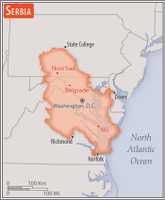

(Source: CIA World Factbook)
The Kingdom of Serbs, Croats, and Slovenes was formed in 1918; its name was changed to Yugoslavia in 1929. Communist Partisans resisted the Axis occupation and division of Yugoslavia from 1941 to 1945 and fought nationalist opponents and collaborators as well. The military and political movement headed by Josip Broz "TITO" (Partisans) took full control of Yugoslavia when their domestic rivals and the occupiers were defeated in 1945.
Although communists, TITO and his successors (Tito died in 1980) managed to steer their own path between the Warsaw Pact nations and the West for the next four and a half decades. In 1989, Slobodan MILOSEVIC became president of the Republic of Serbia and his ultranationalist calls for Serbian domination led to the violent breakup of Yugoslavia along ethnic lines.
In 1991, Croatia, Slovenia, and Macedonia declared independence, followed by Bosnia in 1992. The remaining republics of Serbia and Montenegro declared a new Federal Republic of Yugoslavia (FRY) in April 1992 and under MILOSEVIC's leadership, Serbia led various military campaigns to unite ethnic Serbs in neighboring republics into a "Greater Serbia." These actions ultimately failed and, after international intervention, led to the signing of the Dayton Peace Accords in 1995.
Located in Southeastern Europe, between Macedonia and Hungary
Serbia in comparasion is slightly smaller than South Carolina
Total: 2322 km
Boarders Eight Countries
Bosnia and Herzegovina 345 km, Bulgaria 344 km, Croatia 314 km, Hungary 164 km, Kosovo 366 km, Macedonia 101 km, Montenegro 157 km, Romania 531 km
(Source: CIA World Factbook)
Serbia has a transitional economy largely dominated by market forces, but the state sector remains significant in certain areas. The economy relies on manufacturing and exports, driven largely by foreign investment. MILOSEVIC-era mismanagement of the economy, an extended period of international economic sanctions, civil war, and the damage to Yugoslavia's infrastructure and industry during the NATO airstrikes in 1999 left the economy worse off than it was in 1990. In 2015, Serbia’s GDP was 27.5% below where it was in 1989.
The official currency of Serbia is Serbian dinar (ISO code: RSD), and the central bank is National Bank of Serbia. The Belgrade Stock Exchange is the only stock exchange in the country, with market capitalisation of $8.65 billion and BELEX15 as the main index representing the 15 most liquid stocks.The country is ranked 52nd on the Social Progress Index as well as 51st on the Global Peace Index.
(Source: Wikipedia)
General assessment: Serbia's integration with the EU has helped regulator reforms and promotion of telecoms; wireless service is available through multiple providers; national coverage is growing very rapidly; best telecommunications services are centered in urban centers; 4G/LTE mobile network launched; 5G trials; high mobile penetration the result of multiple SIM cards (2020)
Domestic: fixed-line 29 per 100 and mobile-cellular 96 per 100 persons (2019)
International: country code - 381
Note: the COVID-19 outbreak is negatively impacting telecommunications production and supply chains globally; consumer spending on telecom devices and services has also slowed due to the pandemic's effect on economies worldwide; overall progress towards improvements in all facets of the telecom industry - mobile, fixed-line, broadband, submarine cable and satellite - has moderated
.rs
More information can be found on the Serbian Government Website